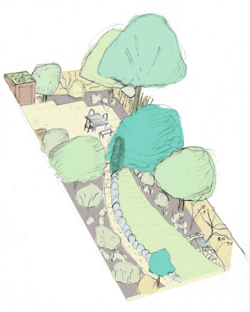

class: center, middle # Forest Garden Overview 🌳 _Overview of design process for my clients_ [](/) by Jake Rayson **Available on Internet near you** _Tuesday 22 October 2019_ [@NatureWorksGdn](https://twitter.com/NatureWorksGdn) [www.forestgarden.wales/talks/overview](https://www.forestgarden.wales/talks/overview/) ##### Press `P` to see notes and credits ??? * My name is Jake Rayson and I am a forest gardener in Wales * Slideshow came about speaking to clients about designing their garden * Looking for straightforward introduction to plants & gardening generally, and wildlife forest gardening in particular * This work is licensed under a [Creative Commons Attribution 4.0 International License](http://creativecommons.org/licenses/by/4.0/), embedded work may have other licenses. --- # Overview contents ### _Working with nature_ 🌳🌳🌳🌳🌳🌳🌳🌳🌳🌳🌳🌳🌳🌳🌳🌳🌳 1. **Useful** to someone 2. **Native** plants co-evolved 3. **Aspect** for sun 4. **Soil** pH & structure 5. **Structure** space & shape 6. **Choosing plants** for size, sun, soil, native ??? * How to choose plants for your garden * _Context_ is central * [Creating a Forest Garden](https://www.agroforestry.co.uk/product/creating-a-forest-garden-2/): buy this book --- # 1. Useful to somebody  * Always design for someone: soil biota, invertebrate, amphibian, mammal… * Eg edible, habitat, protection, building, mulching… * **Stacking function** for every element * Native _generally_ more useful ??? * Principle of forest _and_ wildlife gardening * _Working with nature_ * Informed choice --- # 2. Native  * Native plant species have **co-evolved** * [Database of Insects & Food Plants](https://www.brc.ac.uk/dbif/homepage.aspx) * Native filter on [RHS Plant Finder](https://www.rhs.org.uk/Plants/Search-Form) * [A New Garden Ethic](https://newsociety.com/Books/N/A-New-Garden-Ethic) by [Benjamin Vogt](https://www.monarchgard.com/benjamin-vogt.html) ??? * Native as first consideration * Human needs amongst many * Mass Extinction --- # 3. Aspect  * How is your garden orientated? * South most, West better than East * Tall plants North * _Changes_ across year! * [Sun Surveyor mobile app](https://www.sunsurveyor.com) ??? * Light determines what will grow! * Light informs all other design considerations --- # 4. Soil  * Soil determines what will grow * [Acidity](https://www.rhs.org.uk/Advice/Profile?pid=239) ie [pH](), use kit * [Soil types](https://www.rhs.org.uk/advice/profile?pid=179#section-2): clay, sand, loam, silt, chalk — sausage test or [jar test](https://preparednessmama.com/jar-soil-test/)! * Also consider **rainfall** & possible rubbish ??? * How to know your soil * Plants grow in soil!! --- # 5. Structure <div> <div style="float:right; margin-left:10px;">  </div> <div> <ul> <li>Basic structure: orientation, buildings, fencing</li> <li>Think of plants in <em>layers</em></li> <li>3 basic layers: canopy, shrub, ground cover</li> <li>Think of plants as shapes</li> <li><strong>Critical</strong> consideration is <em><a href="https://www.forestgarden.wales/blog/tree-spacing-forest-garden/">spacing</a></em> to allow light</li> </ul> </div> </div> ??? * Think about structure * Structure determines access & growth --- # 5. Structure — spacing  ??? * Importance of spacing * Plants need light --- # 6. Choosing plants  * [RHS Plant Finder](https://www.rhs.org.uk/Plants/Search-Form) & [Plants For A Future](https://pfaf.org/user/Default.aspx) * Choose native, & for ultimate height and width * [Rootstock](https://www.forestgarden.wales/blog/rootstock-reference/) determines height of tree * Consider light, soil, water, other plants * “Right plant, right place”! ??? * Where to start learning about plants * Fantastic online resources --- # Appendix: reference * [Martin Crawford](https://www.agroforestry.co.uk/): books, courses, plants * [A New Garden Ethic](https://newsociety.com/Books/N/A-New-Garden-Ethic) by [Benjamin Vogt](https://www.monarchgard.com/benjamin-vogt.html) * [Database of Insects & Food Plants](https://www.brc.ac.uk/dbif/homepage.aspx) * [Plants for a Future](http://www.pfaf.org/): massive database of useful plants * [RHS Plant Finder](https://www.rhs.org.uk/Plants/Search-Form) with native filter * [Orange Pippin](https://www.orangepippin.com/apples): super fruit tree reference [](https://www.agroforestry.co.uk/product/creating-a-forest-garden-2/)